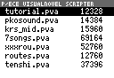
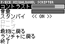

（要標準カーネルVer1.20以降・MMC対応カーネルVer1.28以降）

(c)2004 ヅラChu＠てとら★ぽっと
1.はじめに
こんにちは、ヅラChu＠てとら★ぽっとです。このたびは『P/ECE VISUALNOVEL Scripter』（以下『P/VNScripter』）をダウンロードしていただき、まことにありがとうございます。本ソフトは、P/ECEでビジュアルノベルを動作させるためのスクリプトエンジンです。簡単な命令文を組み合わせたシナリオファイルと、画像、効果音、BGMを用意するだけで、P/ECE用のビジュアルノベルを作成でき、本ソフト上で動作させることができます。
前バージョンである『P/ECE VISUALNOVEL SYSTEM』Ver2.1のバグを修正したほか、メッセージ表示方式を『NScripter』（高橋直樹氏）に似せるなどの改良を加えました。もちろん従来のメッセージ表示方式も選択することができるので、『P/ECE VISUALNOVEL SYSTEM』Ver1.xおよびVer2.x用に作成したビジュアルノベルも動作させることができます。（※但し仕様変更によりセーブデータは引き継げません）
また、作成したビジュアルノベルは『P/VNScripter』本体を添付して自由に販売、配布することができます。詳しくは「著作権について」をご一読下さい。
2.チュートリアル
本ソフトを動作させるためには、P/ECEのカーネルが
- 標準カーネルVer1.20以降
- MMC対応カーネル（まどかさん）Ver1.28以降
である必要があります。
アーカイブを解凍してできたファイルのうち、
- pvnscr.pex
- tutorial.pva
- drum.arc（任意・BGMのドラム音色演奏に必要）
をP/ECE開発環境に付属の『P/ECEコミュニケータ』などでP/ECEに転送し、P/ECEのメニューから『P/VNScripter』を実行して下さい。実行してしばらく待つと、『P/VNScripter』で実行できるスクリプトファイルの一覧が表示されます。MMC対応カーネルVer1.28以降で、P/ECEシステムメニュー（START長押しで表示）の「MMC/SD」をONにすると、フラッシュメモリ上のファイルだけでなく、MMC/SDカード上のファイルも表示されます（少し時間がかかります）。
スクリプトファイル選択画面から“tutorial.pva”を選択するとチュートリアルのビジュアルノベルが開始します。
3.操作方法
スクリプトファイル選択画面
↑↓ カーソル移動 A・START 決定 SELECT 終了 ゲーム画面
↑↓ 選択肢のカーソル移動 A メッセージ送り／選択肢決定 → メッセージ送り（高速） B ウィンドウを消去 SELECT・START メニューを表示 メニュー画面
↑↓ カーソル移動 ←→ オプション値の変更 A 決定／前画面に戻る B・SELECT・START 前画面に戻る
4.ビジュアルノベル作成
tutorialフォルダに、先ほど実行したチュートリアルのビジュアルノベルを構成するファイルが入っています。
- tutorial.pvn（ビジュアルノベルのスクリプト本体）
- *.pgd（画像ファイル）
- *.ppd（効果音ファイル）
- *.pmd（BGMファイル）
それぞれの作成方法についてはリファレンスマニュアルをご覧下さい。
5.著作権について
『P/VNScripter』はヅラChuおよびサークル「てとら★ぽっと」の著作物です。このアーカイブまたはその内容、あるいはそれらを改造したものを、許可なく転載、再配布することを禁じます。
但し、個人/サークルで作られた『P/VNScripter』および『P/ECE
VISUALNOVEL SYSTEM』Ver1.x、Ver2.x用の作品を頒布する際に限り、“pvnscr.pex”または本アーカイブ全体を同梱することを認めています。
また、作品を頒布する際ご連絡いただければ、当方のWebページで紹介させていただきます。
6.謝辞
- GENGEさん
『縮小フォント表示関数』Ver1.07を改変して利用させていただきました。
『半透明（反転）関数』Ver1.00を利用させていただきました。 - Randomistさん
『ドラム音色分離キット』Ver2.10を利用させていただきました。 - nsawaさん
コンパイラにP/ECE用GCC3.3.2を利用させていただきました。
『コンソール版filepack』のソースコードを参考にさせていただきました。 - Yui N.さん
『libfpk』を改変して利用させていただきました。 - MIO.Hさん
P/ECE開発環境付属のfilepackおよびppackのソースコードを利用させていただきました。 - KARASUさん
チュートリアルに画像を使用させていただきました。 - CHEMOOLさん
チュートリアルにP/ECE用フリー音楽『ウィニーメイの夢』を使用させていただきました。
7.更新履歴
- Ver1.1（2005/04/09）
- Ver1.0（2004/06/01）
- 初版公開。
- ソースコードを再構築しました。
- メッセージ表示形式を『NScripter』（高橋直樹氏）に似せました。従来のものと選択して使用できます。
- br,clickstr,lsp,lsph,vsp,csp,setwin命令を追加しました（『NScripter』準拠）。
sndにwave、sndstopにwavestop、bgmにplay、bgmstopにplaystop、setにmov、setwinにsetwindowという別名を追加しました（『NScripter』準拠）。- スクリプトファイル選択時に『P/VNScripter』で動作しないpvn,fpk,pvaファイルを表示しないようにしました。
- コンフィグメニュー画面とシステムメニュー画面を統一しました。
- セーブファイルの仕様を変更しました。
- ドラム音色分離キットのバージョンアップ（Ver2.00→2.10）に対応しました。